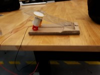
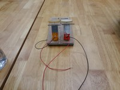
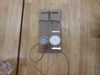
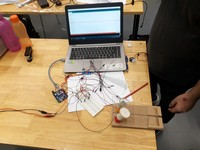

Our Group Reflection!
Pictures of our Actual Build of the Project

Side View of Base

Front View of Base

Plan View of Base

Overall View of Base

What could be improved in our project?
We should have decreased the angle as it affected the flight path of the paper plane, we discovered the angle to be around 30 degrees, which was
least ideal instead of the agreed 15 to 20 degrees.
What went wrong and what did your team do to solve it?
What could have been done better?
Our Personal Reflections!
Bryan's Reflections
When I first entered the engineering academy, I didn’t know what was going to happen and I also didn’t know anyone there, so the bridge making activity was a good activity to help to break the ice between my team. However, when it was time to learn the techniques needed for making the website and programming the Arduino board. There was too much information in a short period that it was hard to comprehend all the information and use the information what we learnt. I feel that the information could’ve been split up into smaller parts and taught to us over a span of 2 days so its easier to understand. In addition, with the additional time smaller activity can be done to assist in making sure students understood how to use the skills that were taught to them.
Allen's Reflections
Throughout these 3 days, what I enjoyed the most was the exposure to the things that I would otherwise won’t take the initiative to try.
Learning how to program the Arduino microcontroller was daunting at first, as there are a lot of things to know, especially knowing which command to use.
But with the help from my teammates and the lecturers, I soon found out that programming is easy to pick up.
Thus, I’m able to walk away with a newly acquired skill at the end of the 3-day programme.
What I enjoyed the least is the lectures we had to go through when a new topic is being covered. The reason why I didn’t enjoy the lectures as much as I wanted too is because for some parts of it, I felt it was a bit long, and became too boring.
It would be better if there was more interaction during the lecture, so that everyone will stay engaged for the rest of the lecture.
One thing that could be improved for the try-outs is the duration of it. I feel that the time given for us to come out with a design and produce it is too short.
Our team had some amazing ideas on what we can put into our launcher, however we had to compromise as there wasn’t enough time for us to build what we initially wanted.
Therefore, if more time were given for us to prototype and tinker, I believe we would’ve done a better job.
Gabriel's Reflections
I like how we are able to get to learn more about the different innovations engineers have made. I also get to meet new faces and get to know different people from different courses. I’ve also get to know how engineering is like in real life, as well as experience the fun of engineering. I felt that the starting time was too early and that refreshments could have been provided so we could have saved more time for those who weren't able to complete their project on time
Rifaaie's Reflections
I love how we got to interact with others from our course, the oppurtunities to learn more about things that other courses can learn like HTML Programming and Electronics.As well as the oppurtunity to work in a team with those from other courses, so that we get to work as a solid unit and to learn from one another so that we can achieve our goal of completing the automated paper plane launcher using different and creative ideas. I felt that the time we had was too short and that it should be extended to allow for more time to complete the main project so that we are able to bring more creative ideas to come to life. I also felt that there should be more interactions, not only amongst team members, but among the whole tryout cohort and lecturers so that we can be comfortable working with one another if they choose to go for the actual programme in the future.